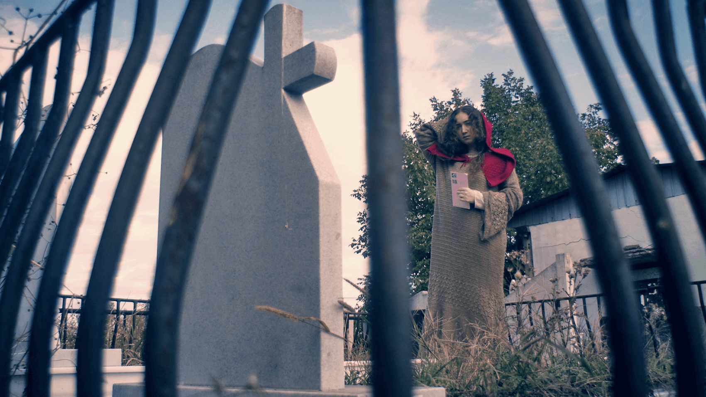

Dessi and Bilyana
Director. Writer. Editor.

Some Awards Here
Victims of manipulated legal trials and repression - Dessi Ivancheva and Bilyana Petrova, the
non-partisan mayors of Mladost district, Sofia city. Charged with bribery by means of a money slip -
a
"lesson" to all who dare challenge the construction business mafia in Bulgaria. An emotional
documentary
in two letters. From mom - a story told for Dessi's child to grasp why his mom is in the Sliven
prison
and not at home. To mom - Bilyana's confession to her mother, passed away while her daughter is
suffering an undeserved sentence and humiliation due to her refusal to cooperate with the powerful
of
the day.
(Ogniana Glavoussanova-Mereteva)
Cast:
- Rada Gibson Raykova
- Brizeida Radkova
- Valentin Alexander
- Narrator:Rada Gibson Raykova
Crew:
- Director:Dima Proykova
- Director of photography:Stefan Kutsarov
- Screenplay:Dima Proykova
- Sound design:Johan Sugarev
- Production design:Silvia Pavlova
- Makeup:Petar Yankov
- Camera assistant:Lachezar Dimitrov-the Czech
- Gaffer:Manol Mitrev
- Edit:Dima Proykova